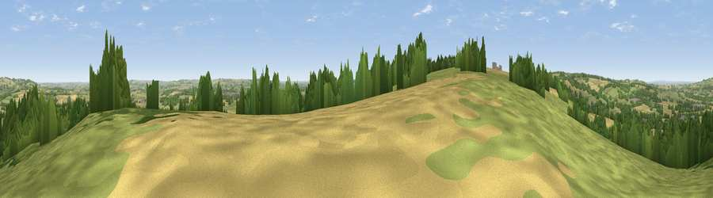

Viewpoint near Aston Magna
#12562 in England · top 27% of its area beats it · near Aston MagnaWhere it is
The exact computed spot (SP 18525 34425). Click the marker for map links.
The view, rendered

A 360° render of this exact spot computed from the terrain model, tree cover and land cover — summer colours, afternoon light, calibrated against photographs of famous viewpoints. Real trees, hedges and buildings will differ in detail.
The panorama
Grey silhouette: terrain skyline in each direction (720 bearings, Earth curvature and refraction included). Dashed green: skyline with trees (+15 m) and buildings (+8 m) as obstacles. Blue strip: how far the ground is visible on each bearing.
Where the view opens
Wedge length = distance to the farthest visible ground on that bearing (vegetation-aware). Rings at 10, 25 and 50 km.
What fills the view
42% grassland · 34% cropland · 22% woodland · 2% built-up
Angular shares of the visible panorama (visual magnitude), not map area. Landscape diversity 0.50 (0–1 Shannon).
Key numbers
More beautiful places nearby
The staircase of upgrades: each row has a higher view potential than everything closer. Driving times are estimates from straight-line distance, calibrated against real road routing — check an actual route before setting out.
| Place | Direction | Drive | Score |
|---|---|---|---|
| Seven Wells Hill | W · 7 km | ~15 min | 67.6 |
| Dover's Hill | NW · 7 km | ~15 min | 72.4 |
| Viewpoint near Chipping Campden | NW · 7 km | ~15 min | 73.3 |
| Broadway Hill | WNW · 7 km | ~15 min | 77.7 |
| Viewpoint near Alstone | W · 21 km | ~36 min | 79.8 |
| Nottingham Hill | WSW · 21 km | ~36 min | 80.9 |
| Bredon Hill | WNW · 23 km | ~39 min | 83.0 |
| Black Hill | W · 42 km | ~62 min | 83.1 |
52.00795, -1.73153 · source: screening · position refined by local search. Computed location — check access rights before visiting.